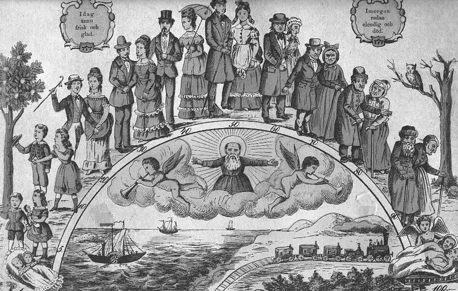
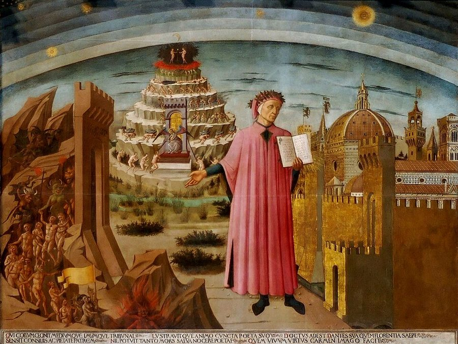
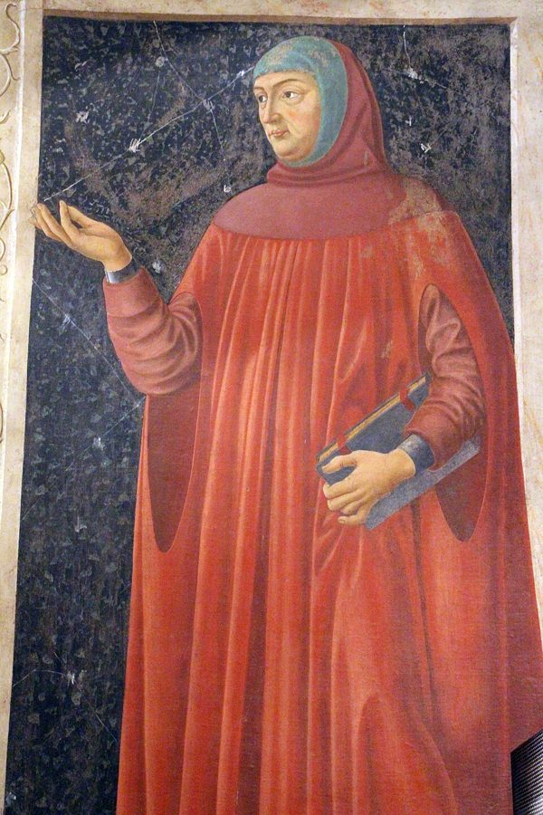
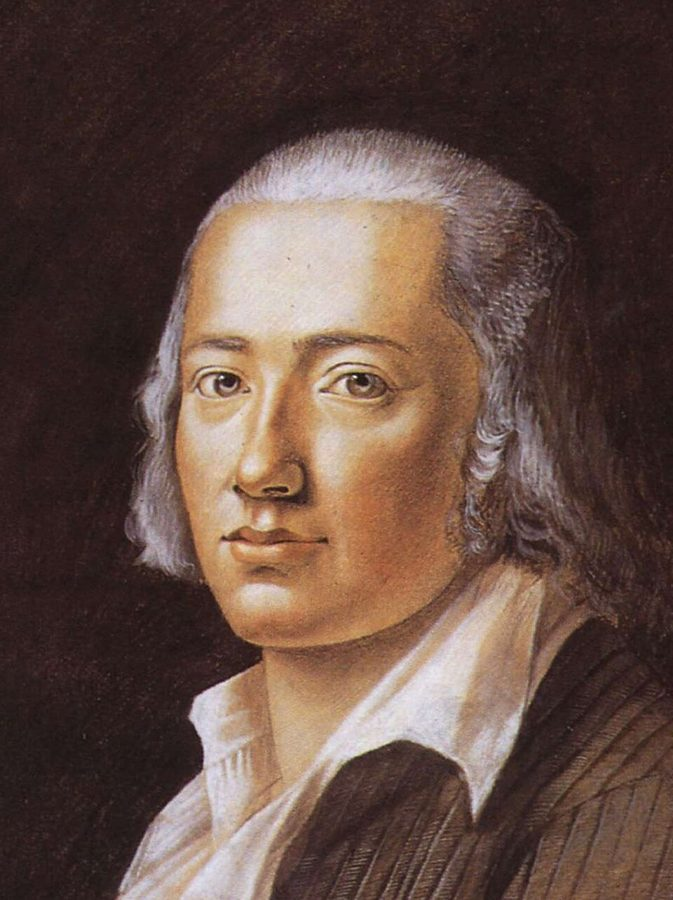
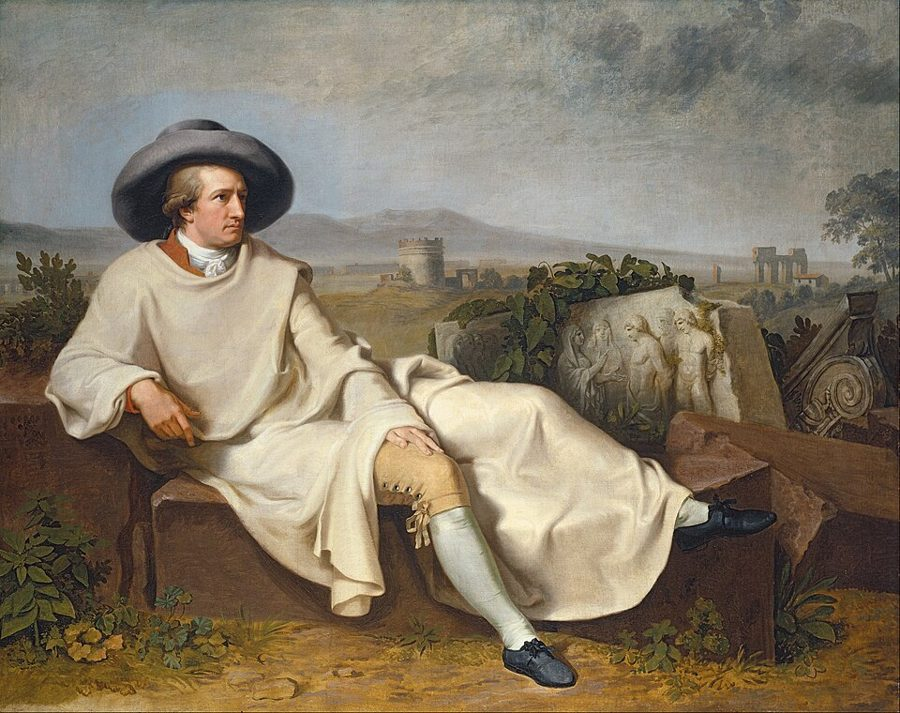

这一页在做什么
这一页两节，题目是「人生的中点」。作者先从《诗篇》算出人寿七十、中点在三十五岁上下，画成一张弓；然后看几位诗人怎样站在弓顶上：但丁把《神曲》的旅程放在自己三十五岁那年，彼特拉克在这个年纪戴上桂冠，又把诗集分成劳拉生前、死后两部分，荷尔德林用三首短诗写人生的两半。第 2 节换成歌德，三十七岁撇下魏玛的差事，出走罗马。读的时候抓两件事：一个数字怎样变成文学题目；顶点前后的两半，在每个人身上有什么不同。

十九世纪流行的「人生阶梯」画片：一生画成一道拱弧，从摇篮升到顶上，再降到一百岁。这里按一百年算，顶点在五十岁，和《诗篇》的七十年、三十五岁不同。左上角的瑞典文说「今天还健康快活」，右上角说「明天已经潦倒、死去」。说明页记为诺伊鲁平 Gustav Kühn 印坊 1886 年的画片。作者不详，公有领域，维基共享资源 读之前：这一页在全书的哪里
第 1 章立了题：生命短、技艺长，摆脱这道落差有两条路。第 2 章开始试第一条，延长生命。这一页先立一把尺：人一生多长，中点在哪。第 1 节讲这把尺，第 2 节的歌德是第一个「在中点重新来过」的人，下一页的医生胡弗兰和浮士德接着走这条路。第 20 段明说彼特拉克接第 1 章的塞涅卡。第 1 章第 31 段让你到「第 3 章第 2 节」找人生之弓，其实就在这一页。
按七十年算，三十五岁就到了顶点。站在顶点上的人，怎样看已经过去的那一半，又怎样安排剩下的那一半？
读的时候带着这几个问题。不用先找答案，读完回来对照「检查一下理解」。
作者说《诗篇》对人寿算得「准确，又有点不准确」，指什么？中点因此落在多大岁数的范围里？§1
彼特拉克的诗集在结构上怎样对应「人生之弓」？§1
《生命之半》里一个年龄都没提，作者凭什么说人生之短就在它的形式里？§1
歌德自己说罗马来得晚，作者为什么反倒说人生中点是合适的时机？§2
这一页的路线
第 1 节有两处花饰分隔，分成三段。第一段很短：从《诗篇》算出三十五岁，马上落到但丁身上，他的年纪、1300 年的圣年、《神曲》的日期叠在一起。第二段最长，是彼特拉克的半生：桂冠、拉丁文史诗、转向意大利文抒情诗、诗集的两部分；末尾突然转到他的拉丁文散文和来世的「账」，像题外话，其实一头接回第 1 章的塞涅卡，一头预告第 7 章的帕斯卡。第三段换到德国，先读荷尔德林一首诗，再添两首凑成「三联画」，图片一张接一张。第 2 节只讲歌德：出走、在罗马的快乐，第 50 段是作者自己的判断，最后的学徒证书又把希波克拉底的箴言拉了回来。
§1 第 1–39 段
§2 第 40–55 段
《诗篇》七十年
但丁 1300
彼特拉克加冕
诗集分两半 来世的账
两半不同质
荷尔德林三首
歌德出走罗马
中点补课
学徒证书
本站示意图。蓝点是「人生之弓」这条概念线，橙点是人和作品，折线是阅读顺序；虚线是第 1 节的两处花饰分隔，实线分开两节。 作者落在哪： 按《诗篇》的算法，人生有一个顶点，顶点前后两半在性质上不同；诗人们在顶点上回看前半生、安排后半生。歌德在中点出走罗马，补上年轻时错过的游学，作者认为这正合适，也许还是最好的时机。
分节地图
这一页是原书第 2 章的第 1–2 节。粗体是这一节的主角；斜体是英文这一节开头的几个词，在电子书里搜它就能跳到那里；节里的转折用段号点出来。读完打个勾。
但丁、彼特拉克、荷尔德林站在弓顶约 2500 词 How long does human life last? … 第 7 段起是彼特拉克，第 22 段起是荷尔德林的三首诗，图片引文都在这一节。 歌德三十七岁出走罗马约 1600 词 As a young man, Goethe was … 第 48–50 段是重心：歌德说自己来晚了，作者下判断。第 51 段起转到《威廉·迈斯特》。
先用中文过一遍：这一页的概念
作者常常一笔带过、默认你懂的概念，这里先从书外讲一遍：它从哪来，是什么意思。它在这一页起什么作用，看每块最后一句。讲过的概念都汇总在概念汇总 。
§1 人生之弓和人生的中点 arc of life（德文 Lebensbogen），midpoint of life 把一生画成一道先升后降的弧：出生在左端，顶点在中间，死在右端。算术来自《旧约·诗篇》第 90 篇第 10 节（拉丁文武加大本把它编作第 89 篇）：人一生的年日是七十岁，若是强壮，可到八十。七十的一半是三十五。古希腊已有类似的分法，亚里士多德《修辞学》第二卷说身体最盛在三十到三十五岁。但丁在《飨宴》第四卷把一生比作一张弓，顶点在第三十五年。这个「中点」和算术上的一半不同：它像抛物线的最高点，过了它，方向就变了，前后两半不是同一种时间。
0
35 岁
70 岁
《诗篇》：人寿七十，若是强壮可到八十
顶点
但丁 35 岁：1300 年的旅程
彼特拉克 36 岁：罗马加冕
歌德 37 岁：出走罗马
但丁 56 岁去世
彼特拉克 70 岁去世
上升的一半
下降的一半
本站示意图，横轴是岁数，按《诗篇》的七十年画。顶点旁三个点从左到右是但丁、彼特拉克、歌德到达各自「中点事件」的年纪；歌德活到 82 岁，超出了这张弓。 在这一页： 第 1–2 段立起这套算法，第 22 段说顶点前后两半性质不同，第 29、39 段在荷尔德林诗里找到这张弓，第 42、50 段用到歌德身上。
§1 圣年和大赦 annus sanctus（Holy Year），indulgence 源头是《旧约·利未记》第 25 章的「禧年」：每五十年一次，释放奴隶、归还土地（注 2 说路德把它译作 Halljahr）。天主教会在 1300 年由教宗博尼法斯八世第一次宣布「圣年」：这一年到罗马朝圣、按规定参拜圣彼得和圣保罗两座大殿的人，可以得到「全大赦」。大赦（indulgence）不是赦罪本身，而是免除罪在今生或炼狱里还要受的暂罚。圣年原定一百年一次，后来缩短到五十年、二十五年。可以把它想成教会定下的一个特别的结算期。
在这一页： 第 4 段：1300 年既是第一个圣年，又正是但丁三十五岁，他把《神曲》的旅程放在这一年的复活节。
§2 壮游 grand tour 17、18 世纪英国和欧洲大陆上层家庭的习惯：儿子学业结束后，由一位家庭教师陪着，花一两年甚至更久游历法国和意大利，在罗马、佛罗伦萨、那不勒斯看古迹和艺术，学语言，结交人物，算是教育的最后一课，回来才算「完成了」。它有固定的路线、年龄和陪同，是一段被社会规定好的人生阶段。歌德的父亲 Johann Caspar Goethe 年轻时也去过意大利，还用意大利文写了游记。可以想成那个时代的「毕业旅行」，只是更长、更贵，也更像一项义务。
在这一页： 第 50 段，作者拿壮游作对照：这本该是二十来岁走的路，歌德到人生中点才补上。
这一页还用到几个别处讲过的概念：第 20、42、46 段塞涅卡的「忙碌的人」和「自己的时间」，见闲暇和自己的时间 ；第 21 段彼特拉克和来世做的「生意」，可以对照时间就是金钱 和第 7 章的帕斯卡的赌注 ；第 39 段命运女神（Parzen）手里剪生命之线的剪刀，见时间剪 。
书里的人和作品
按在书里出现的顺序排，标题前是节号。作品只讲到读懂这一节需要的程度。
§1 但丁：《飨宴》和《神曲》
但丁 Dante Alighieri，1265–1321 佛罗伦萨诗人。卷进城里的党争，1301 年起再没回过家乡，1302 年初被正式判处流放，最后死在拉文纳。
《飨宴》（Convivio）是但丁用意大利文写的哲学散文，约写于 1304–1307 年，没写完；「人生像一张弓」出自第四卷。《神曲》（Divina Commedia）一百歌、一万四千多行，写「我」在地狱、炼狱、天堂里走了一个星期。但丁把这趟旅程放在 1300 年复活节前后，正是他三十五岁、第一个圣年，所以作者说第一行的「我们人生旅程的中途」既有神学的意思，也有自传的意思。作者拿他说明：一个算出来的岁数，可以成为一部大作品的骨架。书里第 6 段算的是：但丁活了五十六岁，比《诗篇》给的七十岁早了十四年。

多梅尼科·迪·米凯利诺（Domenico di Michelino）1465 年为佛罗伦萨大教堂画的但丁：左手捧着打开的《神曲》，右手指向地狱的入口，身后是炼狱山，右边是佛罗伦萨城。Domenico di Michelino / After Alesso Baldovinetti，公有领域，维基共享资源 §1 彼特拉克的桂冠
彼特拉克 Francesco Petrarca（Petrarch），1304–1374 意大利诗人、人文主义者，用拉丁文写学问，用意大利文写情诗。生在 1304 年 7 月，死在 1374 年 7 月，恰好七十岁。
那不勒斯国王罗伯特 Robert of Anjou，1343 年去世 安茹家族的那不勒斯国王，人称「智者罗伯特」，是彼特拉克的赞助人。
第 8 段的几处说法和通行的记载有出入，书里的说法照书读，这里另说。罗马元老院和巴黎大学的邀请，据通行的记载，是 1340 年 9 月 1 日同一天送到的（书里写 1339 年）。加冕在 1341 年 4 月 8 日，那天是复活节（书里写 4 月 9 日，说那天是复活节星期一）。罗伯特是那不勒斯的罗伯特一世，不是「二世」；他事先在那不勒斯考了彼特拉克三天，典礼本身由罗马的元老主持。第 10 段说罗伯特 1346 年意外去世，其实他死于 1343 年 1 月。

安德烈亚·德尔·卡斯塔尼奥（Andrea del Castagno）约 1449–1450 年为卡尔杜奇别墅画的「名人」系列中的彼特拉克，现在在乌菲齐美术馆。Francesco Bini 摄，CC BY-SA 4.0，维基共享资源 §1 《阿非利加》和《歌集》《阿非利加》（Africa）是彼特拉克用拉丁文六音步写的史诗，歌颂打败迦太基的罗马将军西庇阿，没写完。诗末陪西庇阿凯旋的古罗马诗人恩尼乌斯（Ennius），作者说就是彼特拉克自己的影子。真正让他传世的是意大利文抒情诗，后人叫《歌集》（Canzoniere），他自己起的拉丁文书名是《俗语诗零篇》（Rerum vulgarium fragmenta），共 366 首，多数是十四行诗。前 263 首写于劳拉生前，后 103 首写于她死后。劳拉是谁至今没有定论；Laura 和桂树 lauro 音形相近，诗里常拿来双关。这种情诗写法影响了整个文艺复兴，叫「彼特拉克体」。
§1 《论孤独的生活》《论孤独的生活》（De vita solitaria）是彼特拉克的拉丁文散文，书里说他从 1346 年写到 1366 年。它把城里「忙碌的人」和乡下隐居、从容看着时间流过的「独居的人」对照着写。作者拿它说明两件事：一是彼特拉克接着塞涅卡《论生命之短》往下讲（见第 1 章第 2 节）；二是他会算账，把此世的苦当成在来世结算时的收益。作者说这个想法往前指向三百年后帕斯卡的赌注，那在第 7 章。
§1 荷尔德林的三首诗
荷尔德林 Friedrich Hölderlin，1770–1843 德国诗人，电子书里拼成 Holderlin。三十多岁后精神失常，1807 年起在图宾根内卡河边一位木匠家的塔楼里住到去世，整整三十六年。
三首都是短诗。《生命之半》（Hälfte des Lebens）两节各七行，不押韵，收在 1804 年出版的《1805 年袖珍年鉴》里，是他发病前发表的最后几首诗之一。《生命历程》（Lebenslauf）四节，今天的德文里这个词也是「简历」。《致命运女神》（An die Parzen）三节，Parzen 是罗马神话的命运三女神。作者拿这三首当一幅「三联画」：一首写两半的断裂，一首写弓的升降，一首写顶点上要完成的事。

荷尔德林二十二岁时的粉彩像，Franz Carl Hiemer 画于 1792 年。Franz Carl Hiemer，公有领域，维基共享资源 §2 歌德的意大利之行
歌德 Johann Wolfgang von Goethe，1749–1832 德国诗人。1775 年应邀到魏玛，后来做了枢密顾问、大臣，管财政、矿务、道路。出发去意大利时三十七岁。
卡尔·奥古斯特公爵 Karl August，1757–1828 萨克森-魏玛-艾森纳赫的统治者，歌德的雇主和朋友，准了他的长假。
施泰因夫人 Charlotte von Stein，1742–1827 魏玛宫廷的贵妇，歌德十年里最亲近的朋友。他不告而别，连她也没说。
1786 年 9 月 3 日凌晨，歌德化名从卡尔斯巴德温泉出发南下。据通行的说法，他 10 月 29 日到了罗马；书里跟着《意大利游记》上标的日期，把 11 月 1 日万圣节说成到罗马的第一天（注 14 说引文照的是歌德自己标的日期）。他在意大利待到 1788 年春。《意大利游记》（Italienische Reise）是他晚年拿当年的日记和书信改写的，1816–1817 年出了前两部，1829 年才出齐。第 42 段的括号说，尼禄没准塞涅卡辞官：据塔西佗《编年史》，公元 62 年塞涅卡请求退隐，尼禄没有答应。

蒂施拜因（Tischbein）1787 年画的《歌德在罗马郊野》。画家是歌德在罗马的同伴，两人住在一处。Johann Heinrich Wilhelm Tischbein，公有领域，维基共享资源 §2 《威廉·迈斯特》：学徒证书和《漫游时代》《威廉·迈斯特的学习时代》（Wilhelm Meisters Lehrjahre，1795–1796）是德国「教育小说」（Bildungsroman）的范本：一个青年在一连串经历里长成一个人。小说第七卷第九章，主人公从一个叫「塔社」的秘密团体手里拿到一张「学徒证书」（Lehrbrief），开头就是希波克拉底那句箴言，第 1 章的样板页也提到过它。续篇《威廉·迈斯特的漫游时代》（Wanderjahre）1821 年初版，1829 年出了扩充版，第 54 段引的是其中一个团体的处世格言：把每个钟点都安排好。作者说塞涅卡和阿尔贝蒂大概会赞同这套做法。
图里的引文
下面这几段在你的电子书里是图片，长按查不了词，也搜不到。每块先说它在屏幕上的位置，再逐行给中文意思；行首的斜体是图里这一行开头的几个词，用来和图对上。古人的诗本站据原作的语言译，不从英译转译。
§1 第 13 段 · 彼特拉克《歌集》里的四句 · 英文在前，括号里是意大利文原句在第 12 段末尾（…particularly reminiscent of Hippocrates:）之后。括号里的意大利文就是彼特拉克的原句，本站据意大利文译。
life is short 人生是短的。in this short 在我这短促而终有一死的一生里。出自《歌集》第 263 首，那是第一部分（劳拉生前）的最后一首。so short is 时间这样短，思绪这样快。英译方括号里的 pass away（消逝）是译者补的，意大利文只说「思绪这样快」。for the road 因为路长，时间短。作者说这一句最像希波克拉底：路的「长」对着时间的「短」，正是箴言的句式。
注 7 一口气列了七首诗的编号（连同第 14 段的 dolce、dura），没有逐句对应；本站只核实了第 2 句的出处。
penser
第 3 行
（意大利文）思绪
pensiero 的古体、诗体写法。前面的 ’l 是冠词 il 的省略。
’l camin
第 4 行
（意大利文）那条路
camin 是 cammino 的诗体缩写，和《神曲》第一行 Nel mezzo del cammin 是同一个词：人生被想成一段路。
§1 第 23–27 段 · 荷尔德林《生命之半》全诗 · 英译三张，德文原作两张在第 22 段末尾（…by his much-admired poem,）之后。前三张是英译，后两张是德文原诗，下面照德文逐行。
Mit gelben Birnen hänget 挂着黄色的梨，（「垂下」这个动词在这一行，主语要到第 3 行才出现）Und voll mit 又开满了野玫瑰，Das Land in 这片土地垂向湖里。der See 是湖（die See 才是海）；in den 带方向，是「垂进湖里」。Ihr holden Schwäne 你们这些可爱的天鹅，Und trunken von 被亲吻灌醉了，Tunkt ihr das 你们把头浸进Ins heilignüchterne Wasser 那神圣而清醒的水里。Weh mir, wo nehm 唉，到哪里去取呢，等到Es Winter wird 冬天来了，花朵；又到哪里去取Den Sonnenschein 阳光，Und Schatten der 和大地的阴影？Die Mauern stehn 四壁立着，Sprachlos und kalt 无言而冰冷，风里Klirren die Fahnen 旗子铿铿作响。
英译和原作的出入：诗题 Hälfte 是「一半」，英译成 The Midpoint of Life（注 12 自己注了 lit. Half of Life）；See 是湖，英译成 sea；Sprachlos 是「失了语言」，英译 Silent 丢了这一层。
hänget
第 1 行
（德文）垂挂着
hängt 的古雅写法，多一个 e 凑音节。德文第一节是一整句，主语 Das Land 在第 3 行；英译把句子拆开、主语提前了。
heilignüchtern
第 7 行
（德文）神圣而清醒的
荷尔德林把 heilig（神圣）和 nüchtern（清醒、不醉）并成一个词，正好和上一行的「被亲吻灌醉」相对。英译 sacred sober 拆成两个词。
Sprachlos
第 6 行
（德文）无言的，说不出话的
字面是「没有语言的」。对一首写诗人后半生的诗，墙「失了语言」比英译的 Silent（安静）多一层意思。
Fahnen
第 7 行
（德文）旗子；这里多半指屋顶上的风向旗
Fahne 本义是旗。一般理解成铁皮做的风向旗（Wetterfahne），在冷风里碰得叮当响，所以英译作 weathervanes。
§1 第 30–31 段 · 荷尔德林《生命历程》最后一节 · 英译一张，德文原作一张在第 29 段末尾（…he thanks the heavenly powers:）之后。前一张是英译，下面照德文逐行。
Alles prüfe der 让人去尝试一切吧，天上的神灵说，daß er, kräftig 好让他被喂养得强壮，学会为一切感恩，Und verstehe die 并且懂得那份自由：Aufzubrechen, wohin er 动身启程，去他想去的地方。
英译把 aufbrechen 译成 break out（冲出去），德文最常用的意思是「动身、启程」。作者第 32 段接着问 break out toward what，用的是英译的说法。
prüfe
第 1 行
（德文）让（人）去检验、尝试
prüfen 的虚拟式，表示愿望和吩咐：「愿人去试一切」。英译 should try 意思对，口气从神灵的吩咐变成了道理。lern 是 lerne 的省略。
Aufzubrechen
第 4 行
（德文）动身，出发
aufbrechen 也有「破开」的意思，但和 wohin er will（去他想去的地方）连用，就是出门上路。
§1 第 33–38 段 · 荷尔德林《致命运女神》全诗 · 英译三张，德文原作三张在第 32 段末尾（…as an answer to this question:）之后。前三张是英译，后三张是德文原诗，下面照德文逐行。
Nur Einen Sommer 只给我一个夏天吧，你们这些强大的神！Und einen Herbst 再给我一个秋天，让我的歌成熟，daß williger mein 好让我的心，被甜美的Spiele gesättigt, dann 弹奏喂饱了，然后更情愿地死去。Die Seele, der 灵魂若在生前没有得到Nicht ward, si 它神圣的权利，到了地下的冥府也不得安息；Doch ist mir 可是，只要有一天，那件神圣的、Herzen mir liegt 我放在心上的事，那首诗，写成了，Wilkommen dann, o 那就欢迎你，阴影世界的寂静！Zufrieden bin ich 我就满足了，哪怕我的琴声Mich nicht hinab 不陪我下去；我曾经有一回Lebt ich, wie 像神那样活过，再多就不需要了。
英译大体贴着原作。图里德文有两处印错：第 6 行 si 应为 sie（它），第 9 行 Wilkommen 应为 Willkommen。
Einen
第 1 行
（德文）一个，只一个
冠词本该小写 einen，诗人写成大写，是在强调：只要一个夏天。下一行的 einen Herbst 就是小写。
Orkus
第 2 行
（德文）冥府
拉丁文 Orcus，罗马神话的冥神和冥界。作者第 29 段说《生命历程》里弓的终点也是 Orkus。
Saitenspiel
第 2 行
（德文）弦乐，琴声
字面是「弦的弹奏」，指诗人的竖琴，也就是他的诗。古代神话里奥菲斯靠琴声下到冥府，这里诗人说琴声不陪他下去也行。
Einmal
第 3 行
（德文）有一回，一次
放在行尾、大写，读起来分量很重：一辈子只要有一次像神那样活过就够。英译 once 放在行尾，保留了这个位置。
词与短语
你用 Kindle，单个生词长按就能查，这里只收词典帮不上的：每个词都认识、合起来不懂的说法，学术腔，没翻译的外文，典故。斜体小字是原句里连续的几个词，错字照电子书原样，搜它就能跳到那里。图里的词在上面「图里的引文」里。
§1 但丁、彼特拉克、荷尔德林站在弓顶
exactly-and a little inexactly
The Psalmist knows exactly-and a little …
准确，又有点不准确
连字符其实是破折号。「准确」指七十这个数，「不准确」指后面又说强壮的可到八十，所以中点在三十五到四十之间浮动。
threescore and ten … fourscore
… Or even by reason of strength fourscore
七十……八十
score 在这里是「二十」，threescore and ten 是三乘二十加十。这是英文《圣经》的老说法，林肯的 Four score and seven years ago 用的也是它。
Psalm go:10
… (Psalm go:10). From this it follows …
《诗篇》第 90 篇第 10 节
go 是 90 的识别错字。注 1 写 Psalm 89:10，是拉丁文武加大本的编号，说的是同一句。
gear … in accord with
… authors geared their lives in accord with …
照着……安排
gear 原是齿轮，作动词是「使咬合、使配合」。这里说许多作者照这七十年来安排自己的一生。
exegetes
… many exegetes as well, as an …
解经家
专门注释《圣经》等经典的人。作者说「弓」这个画法，借自泰奥弗拉斯托斯，也合许多解经家的理解（第欧根尼·拉尔修咏泰奥弗拉斯托斯、拿「智慧之弓」作比的那首诗，见第 1 章样板页）。
La nostra vita procede a imagine d’arco
… nostra vita procede a imagine d'arco …
（意大利文）我们的一生照着弓的样子行进
但丁《飨宴》第四卷第 23 章。arco 是弓，也是拱、弧。后半句的 punto sommo 是「最高点」。
Nel mezzo del cammin di nostra vita
… Paradise (Paradiso), begins with the verse:
（意大利文）在我们人生旅程的中途
《神曲·地狱篇》第一行。nostra 是「我们的」：但丁说的是人人的人生，下一行才转到「我」。
annus sanctus
… Holy Year (annus sanctus). Great numbers …
（拉丁文）圣年
见上面的概念块「圣年和大赦」。
complete indulgence
… in order to acquire there the …
全大赦
indulgence 在这里不是「放纵」，是天主教的「大赦」：免除罪还要受的暂罚。complete 对应教会术语 plenary（全部的）。
fourteen years before his time
… in Ravenna in 1321, fourteen years …
比「他的」寿限早了十四年
his 在书里加了引号：不是他命中注定的死期，而是《诗篇》给每个人算的七十岁，落在 1335 年。
put a decisive stamp on
… put a decisive stamp on the …
给……打上了决定性的印记
stamp 是印章。说「彼特拉克体」决定了文艺复兴诗歌的面貌。
immaturus aevo atque animo
… (immaturus aevo atque animo), since he …
（拉丁文）年纪和心智都还不成熟
aevum 是年岁，animus 是心灵。彼特拉克晚年回看那次加冕，说自己当时受之有愧。
makes his poetic point
… Petrarch makes his poetic point: at …
点出他写诗的用意
make a point 是「把要说的意思亮出来」。冒号后面就是这个意思：诗人恩尼乌斯戴着桂冠走在凯旋的将军身边，彼特拉克在说自己。
stroke of fate
After this stroke of fate, Petrarch …
命运的一击
stroke 在这里是「打击」，不是笔画。指赞助人罗伯特国王之死。
paradigm change
… (Karlheinz Stierle), the literary fame that …
范式转换
本是科学史家库恩的说法，指一门科学整套做法的更替。德国学者 Stierle 借来说彼特拉克从拉丁文史诗转向意大利文抒情诗。
Rerum vulgarium fragmenta
… carelessly selected Latin title, Rerum vulgarium fragments …
（拉丁文）俗语诗零篇
fragments 是 fragmenta 的识别错字（第 15 段拼对了）。vulgar tongue 不是「粗俗的话」，是相对于拉丁文的「俗语」，即意大利文。
as lovely as she is hard
… as lovely (dolce) as she is hard …
既温柔又冷硬
as A as she is B 是「既 A 又 B」的意思，两样一样多。dolce / dura 一甜一硬，注 7 提到的 dolci durezze（甜美的坚硬）是这种矛盾修辞的典型。
in flesh and blood
… ever really existed in flesh and blood …
有血有肉地，真实地
问的是劳拉是真人，还是诗人想出来的。
in vita / in morte di Madonna Laura
… which the author tells us were written …
（意大利文）劳拉女士在世时 / 去世后
《歌集》两部分的传统标题。Madonna 在这里是对女士的尊称，不是圣母。
in league with
… time is still in league with love:
和……站在一边
league 是联盟。前半生时间还帮着爱情：下面那首诗把相遇的年、月、日、时一样样祝福。
Benedetto sia ’l giorno
… et l'anno, et la stagione, …
（意大利文）那一天有福了
《歌集》第 61 首的开头，上一段是英译。电子书里错字很多：`1 mere 应为 ’l mese（那一月），`1 是 ’l。
vedendo ogni giorno il fin più presso
… vedendo ogni giorno it fin pin presso.
（意大利文）眼看终点一天比一天近
电子书里 il 印成 it，più 印成 pin（同段的 pin di mill’anni 也是 più）。
vir occupatus
… (vir occupatus). Even more sharply than …
（拉丁文）忙碌的人
塞涅卡的说法，见
闲暇和自己的时间 。下文的 vir solitarius 是「独居的人」。
settlement with the Beyond
… in a more exact settlement with the …
和彼岸算账
settlement 是结账、清算，the Beyond 是死后的世界。作者故意用商业的词说宗教的事。
negotiari
… (negotiari) an eternal beatitude in Heaven.
（拉丁文）做买卖，经营
negotium（事务、生意）字面是 nec + otium，「不闲」。用它说「换取天国的福」，买卖的意思是有意的。
iactura … lucro
… (iactura) but rather a …
（拉丁文）损失……收益
记账用的一对词：此世错过的幸福，记在来世的账上不是亏损，而是盈利。
valences
… in poetic language the valences of …
分量，意味
化学里是「化合价」。作者用它说前后两半各自的价值和意义。
metonymically represented
… But it is metonymically represented through …
用借代的方式表现
metonymy 是借代：拿相关的东西代替本身，这里拿夏天、冬天代替人生的两半。作者是研究修辞的语文学家。
at the interface between
Only at the interface between the two …
在两节交接的地方
interface 不是程序员的「接口」，是两样东西接上的那条缝。
one panel of a triptych
… poem as one panel of a triptych …
三联画的一扇
triptych 是祭坛上常见的三联画，三块画板并排，合起来是一件作品。作者说三首诗合起来读。
subjects his poetry to the law of life
… Holderlin subjects his poetry to the law …
让他的诗服从生命的法则
subject A to B 是「让 A 受 B 支配」，不是「主题」。
unser Bogen
… arc of life (unser Bogen) that …
（德文）我们的弓
《生命历程》第一节的词，Bogen 是弓，也是拱、弧，正是「人生之弓」的弓。
Aufwärts oder hinab
… (Aufwarts oder hinab), but never along …
（德文）向上，或者向下
电子书丢了变音，Aufwarts 是 Aufwärts。
But break out toward what?
But break out toward what? The …
可是，出发去哪里呢？
接的是上一首最后一行的英译 To break out。德文 aufbrechen 是动身上路，这一问就是「往哪里去」。
§2 歌德三十七岁出走罗马
Sturm und Drang
… to be carried away by this poetic …
（德文）狂飙突进
18 世纪 70 年代德国文学的一场运动，崇尚激情和天才，青年歌德是主将。电子书印成 Sturm and Drang，and 应为德文的 und。
an early coronation as a poet
… the young author an early coronation …
提前到来的诗人加冕
是比喻，不是真加冕：作者拿魏玛宫廷的邀请对照第 1 节彼特拉克的桂冠，所以接着说德国没有桂冠可戴。
amount merely to a sinecure
… did not amount merely to a sinecure …
不只是一份挂名闲差
amount to 是「等于」。sinecure 来自拉丁文 sine cura（不用操心），指拿薪水不干事的职位。
Privy Councilor
… in the Privy Councilor and later Minister …
枢密顾问
德文 Geheimrat，宫廷里参与机要的高级官职。读者得从这位官员身上认出当年那位天才诗人。
golden cage
… breaking out of his golden cage at …
金笼子
待遇优厚却不自由的处境。break out 和荷尔德林诗的英译用的是同一个说法。
may also have been driven
He may also have been driven to …
也许还受了……的推动
作者的推测，有 may 和 also 两层保留：塞涅卡的话可能是原因之一，不是说就是因为它。
Vita, si uti scias, longa est
… (Vita, si uti scias, longa …
（拉丁文）人生，你若懂得用，就是长的
塞涅卡《论生命之短》第 2 章的话，作者在前面括号里给了英文。scias 是「你会、你懂得」。
scil.
… the beloved (scil. Italian) language will …
即，就是
拉丁文 scilicet 的缩写，插在引文里补一句说明，是作者补的，不是歌德的话。
with unmixed pleasure
… always received with unmixed pleasure by …
纯然高兴地
前面有 not always：魏玛的朋友们收到信，高兴里掺着点嫉妒。
the economy of Goethe’s life-time
… related to the economy of Goethe's life-time.
歌德怎样经营自己的一生
economy 在这本书里是「安排、经营」，不是国民经济；life-time 是术语「生命时间」，见第 1 章第 2 节。
scion of the upper middle class
… young nobleman or scion of the upper …
上层市民家庭的子弟
scion 原是嫁接用的接穗，引申为名门之后。
grand tour
… performs the pleasant task of making his …
壮游
见上面的概念块「壮游」。电子书里这里的引号印乱了。
it has its own measure
… because it has its own measure, …
它自有它的分寸
measure 在这里是尺度、分寸，不是「措施」。说人到中点，知道该怎么做，能自己决定改主意、从头来过。
of his own accord
… so that Goethe can of his own accord …
自己主动地
不是「按照他的协议」。accord 在这个固定说法里是「自愿」。
Lehrbrief
… (Lehrbriefl, in which Hippocrates' first …
（德文）学徒证书
手艺人学徒期满时拿到的结业证书。电子书印成 Lehrbriefl，末尾的 l 多半是右括号的误识。英文 Indenture 本是学徒契约。
Bildungsroman
In the Bildungsroman Wilhelm Meisters Wanderjahre, …
（德文）教育小说，成长小说
写一个人怎样在经历里长成的长篇小说，《威廉·迈斯特》是公认的范本。
would probably have endorsed
Seneca and Alberti would probably have endorsed …
大概会赞同
虚拟语气加 probably：两位古人当然没读过歌德，这是作者的推想。
throw himself back into
… somehow to throw himself back into …
重新投身于
throw oneself into 是全力投入。back 说的是从罗马回到魏玛的公务里。
读不通的扫描错字：
… questo arco e nel 350 anno 应为 è nel 35° anno（在第三十五年）。The Diving Commedia, in which 应为 Divina Commedia，第 5 段同。… completed his Africathough with diminished … 应为 Africa-though，中间是破折号。… day of the year 13oo,5 but … 应为 1300，后面的 5 是注号。… along a level path (ebenen P fades). 应为 ebenen Pfads（平坦的路）。… grant him only so muchor rather, … 应为 much-or rather，中间是破折号。… poster ity would have considered him … 应为 posterity（后世）。
读完：作者到底说了什么
读完这一页的几节再看。下面是作者在这几节里的论点，由本站按论点重新组织，不按原书的顺序；每条右上角是依据所在的段落，拿不准就回书里那几段再读一遍。
《诗篇》给人生定了一把尺，中点在三十五岁上下 人寿七十，强壮的可到八十，所以中点在三十五岁，或者稍晚，最多到四十。作者说，直到近代，许多作者都照这个长度安排生活，还拿它当文学题目，但丁就把《神曲》的旅程放在自己三十五岁那年。
§1 第 1、5 段 顶点前后的两半在性质上不同，诗是想这件事的地方 作者说，从但丁和彼特拉克可以看到，弓的顶点也是看清两半不同的时刻。彼特拉克的诗集分成劳拉生前、死后两部分，整部集子的结构跟着他的人生弧线起落，可见在他那里生命和艺术紧紧相连。
§1 第 19、22 段 短诗的形式里就装着人生之短 《生命之半》不提年龄，只把夏天和冬天直接并在一起，冬天在第二节中间突然到来。作者说，人生之短就在它的形式里。《致命运女神》只求一个夏天、一个秋天，够写成那首诗就行：时间只要够用，不求长。
§1 第 28、39 段 彼特拉克也会给一生算账 作者指出，彼特拉克和他那个时代一样懂得算计：此世得到的幸福少，在和来世的结算里不算亏损，反而是盈利。作者说这个想法往前指向三百年后帕斯卡的赌注。
§1 第 21 段 中点正合适、也许是最好的重新开始的时机 歌德年轻时错过了上层子弟游学意大利的那几年，晚了十五年才去补。作者认为，人生中点恰好适合补上，也许还是最好的时机，因为这个阶段自有分寸，人可以自己决定改变想法、从头来过。
§2 第 50 段
合起来： 这一页给第 2 章立了一把尺：人一生有个顶点，过了顶点，剩下的那一半更显得短，也更值得安排。作者看的第一个例子是歌德：在中点出走，像重生一回，这是「延长生命」那条路的起点。
值得停下来的句子
The poem is short. The brevity of life is contained in its form.— §1 第 28 段。本站译：这首诗很短。人生之短就包含在它的形式里。
两句话，第一句只有四个词，作者自己也写得很短。第二句把 brevity（短）从内容挪到了形式：诗里没有一个字说人生短，可十四个短行、两个季节、省掉的春天和秋天，本身就是那个「短」。这是作者读诗的一贯办法，后面几章读诗也常这样从形式读起。
the midpoint in life is precisely the right and perhaps even the best time, because it has its own measure— §2 第 50 段。本站译：人生的中点恰好是合适的时机，也许还是最好的时机，因为它自有分寸。
判断落在两个词上：precisely the right 是肯定的，perhaps even the best 是加了保留的进一步。读的时候别把 perhaps 丢了：作者说合适是确定的，说最好只是也许。because 后面给的理由很短，has its own measure 要结合下文歌德那句「重新从头开始」来读。
检查一下理解
先在心里答，再点开。答错的那题，回书里把对应那一节再读一遍。
1.（§1）作者从《诗篇》那句话推出人生的中点在哪？为什么说《诗篇》算得「有点不准确」？ 人寿七十，一半是三十五岁。可《诗篇》又说强壮的可到八十，所以中点可能稍晚，最多到四十岁。
2.（§1）1300 年对但丁有哪两重意义？ 那是教会的第一个圣年，到罗马朝圣可得全大赦，但丁也去了；又正是生于 1265 年的但丁三十五岁那年。他把《神曲》一个星期的旅程放在这一年的复活节。
3.（§1）彼特拉克的诗集怎样把人生之弓放进结构？ 366 首分两部分：第 1–263 首写于劳拉生前，第 264–366 首写于她死后。作者说整部诗集的结构对应着诗人一生起落的弧线。
4.（§1）彼特拉克在《论孤独的生活》里是怎样「算账」的？作者把它和谁联系起来？ 此世过得苦，只要讨上帝喜欢，就能在天上换来永福；错过的幸福在来世的账上是收益，不是损失。作者说这预示了三百年后帕斯卡的赌注。
5.（§1）作者怎样从《生命之半》读出「人生之短」？ 诗只有两节七行，不押韵，不提年龄，只把夏天和冬天直接并置，省掉春秋，冬天在第二节中间突然来了。短不在字面上，在形式里。
6.（§1）《致命运女神》里，诗人向命运女神要多少时间？要来做什么？ 只要一个夏天和一个秋天，够他写成心里那首神圣的诗；写成了，死也满足。作者说诗人要的不是多，是少，刚好到达顶点。
7.（§2）歌德说罗马来得晚，晚在哪里？作者怎样看这个「晚」？ 上层子弟通常年轻时由家庭教师陪着去意大利壮游，歌德二十多岁忙着读书写作、随后进了魏玛宫廷，错过了，晚了十五年。作者认为中点正适合补上，也许还是最好的时机。
用一句话说这一页，写给一个没读过的人。
想一想：按七十年算，你现在站在弓的哪一段？有没有一件年轻时错过、现在想补上的事？现在去补，和当年去做相比，多了什么，少了什么？
精彩回顾
读过又忘了，从这里想起来。挑的是这一页最值得记住的人、说法和比喻，不按原书顺序；每条后面是节号，想细看就回书里那一节。全书各页的这一节都收在全书回顾 。
一句话： 按《诗篇》的七十年，人生在三十五岁左右到达弓顶；但丁、彼特拉克、荷尔德林在顶点上写诗，歌德在顶点上出走罗马，补上年轻时错过的那一课。
七十年的弓 《诗篇》说人寿七十，强壮的到八十。七十的一半是三十五：一生画成一张弓，顶点前后两半不一样。
§1 1300 年的三十五岁 但丁生于 1265 年，1300 年满三十五，又逢教会第一个圣年。《神曲》「人生旅程的中途」就放在这年的复活节。
§1 劳拉生前，劳拉死后 彼特拉克的 366 首诗分成两部分，前 263 首写于劳拉生前，后面的写于她死后。诗集的结构就是一张人生之弓。
§1 只要一个夏天 荷尔德林向命运女神只求一个夏天、一个秋天，够写成那首诗；曾经像神一样活过一回，再多就不需要了。
§1 晚了十五年的壮游 歌德三十七岁不告而别，撇下魏玛的差事去了罗马，说自己在那里重生了一回。作者说，人生中点补这一课正合适，也许还是最好的时机。
§2